| Early Life | Starcraft | Halo | Mass Effect |
|---|---|---|---|
| Stratagy Games | MOO2 | Civilization | Distant Worlds |
| Dawn of War | C&C | Factorio |
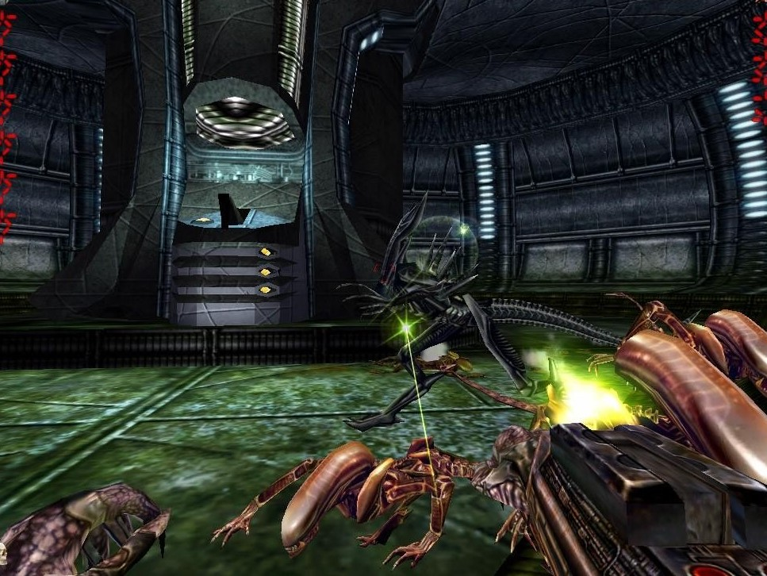
For as long as I can remember, I have been a gamer. But more importantly
I have also wanted to be a game developer. Some of my earliest memories are
of me playing and watching video games with my dad. In many ways, these
memories have has shaped me into the person that I am today.
Some of the earliest games I remember playing are games like Halo,
Unreal Tournament (2004), Starcraft, Aliens vs Predator, and old DND games.
While my interests have grown since I was young, replaying these games, or
even listening to their soundtracks bring a sense of nostalgia.
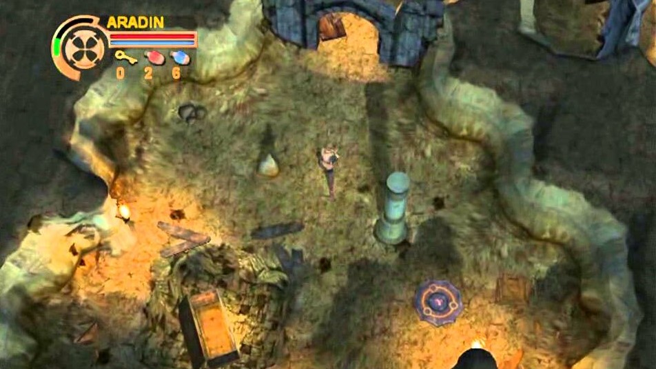
Starcraft is one of those games I remember playing a lot of when I was younger. I have always favored playing as the Zerg, not because I play them well, but because I thought it was cool to play as the Zerg. At this age, my stratagy while very basic, I still had a lot of fun playing this game. This was the first game that showed me my love for staragy games, and especially my interest in creation, as my favorite part of Starcraft was building my base. I still love Starcraft, but I have also come to love other subgenres of stratagy games, especially my love for 4X games.
Starcraft is still one of the best selling games of all time. It is most certianly the best selling game of the RTS genre. And for good reason. Few RTS games have matched the level of craft and skill required to master this game. Starcraft pioneered many of the mechanics we take for granted in modern RTS games.
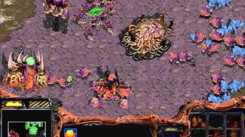 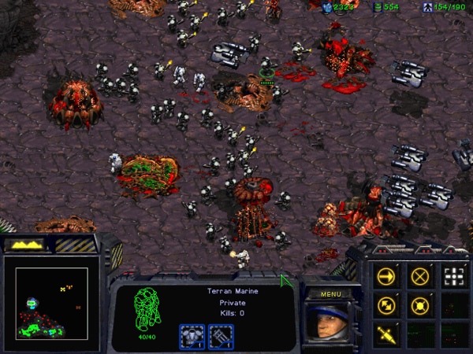Unreal Tournament, and Halo were games that I remember playing a lot. They were some of the earliest shooter games that I ever played. More importantly I have fond memories of playing them with my dad. These games influnced some of my later interests not in shooters, but in RPG's. I spent a lot of time playing and learning the mechanics of these games. It now feels laughable that I once found these games extreamly challanging. But these games still remain very fun, and enjoyable for me. Many people still actively play Unreal Tournament (it is arguable much better than the newer one).
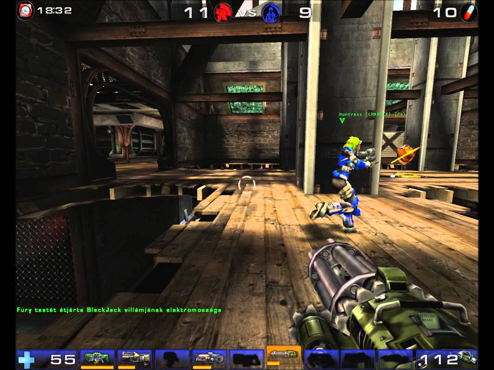 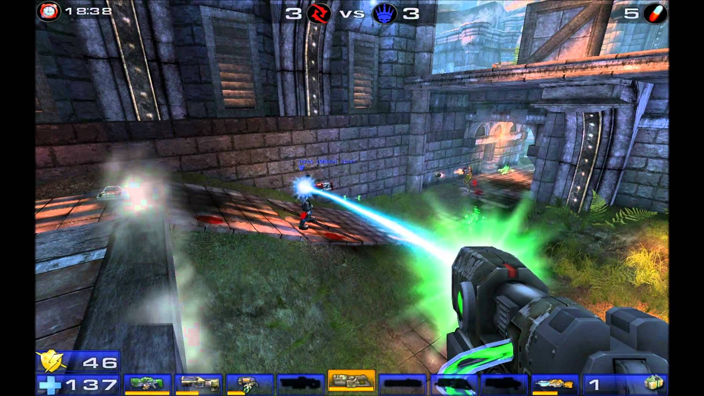I remember quite well playing Unreal Tournament. It was fun to blast my way through the enemy characters. All while using a vareity of weapons that could suite different situations. The quick run and gun nature of the arena shooter is something I miss about modern shooting games. While skill was important, it was even more important to know what weapons to use in various circumstances. I have tried playing it again, and while still quite enjoyable, it was much easier than I remember it being. Though the frantic nature of it's combat was still fun. The communinity for hte game is still quite active.
Halo also holds an interesting place in my heart. I, like many others loved the franchise in the hands of Bungie. Since 343 have taken over, I have not been as happy with the direction of the newer games. Halo has always told an incredible story through it's world. I felt immersed in the world, and I cared for my character, Master Cheif. One of the most iconic characters in gaming. It is unfortunate to see how much the series has fallen ever since.
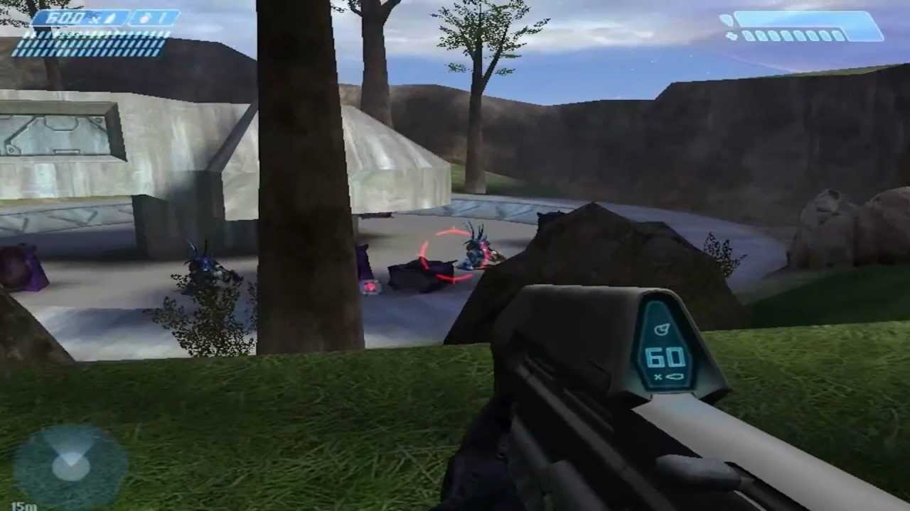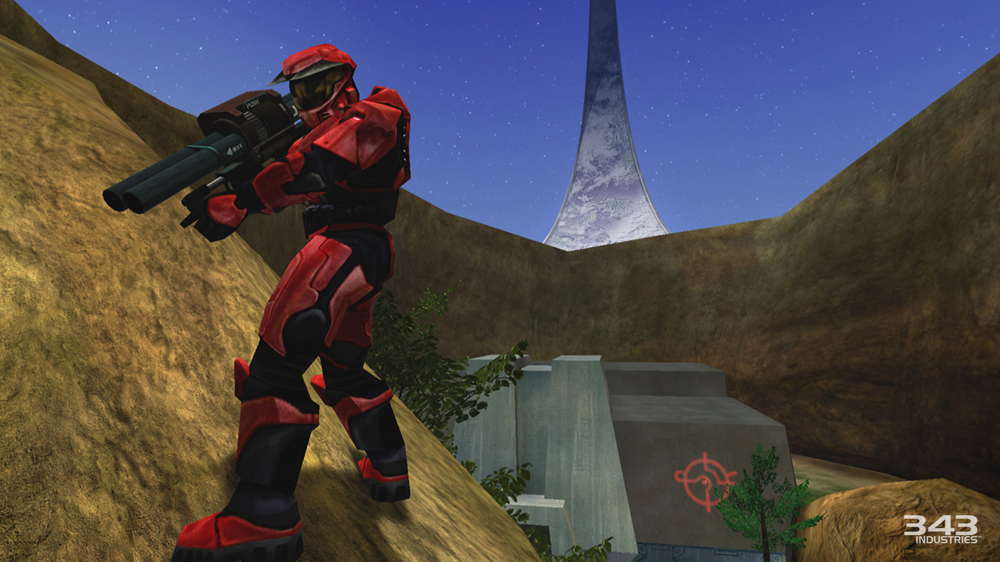Mass Effect is one of my favorite, and first real RPG that I ever played. This game holds a special place in my heart, and ME1 remains my favorite in the franchise. The largest reasons for my love of this franchise is just how immersive the world felt. I loved the science fiction, and the scientific fiction lore that seems close enough to real, that I certianly fell in love with the game and it's world. While ME1 may feel dated now, I enjoy and honestly find the RPG looting mechanics cathardic. I also prefer the overheating system over the later thermal clip system. I also grew attatched to the characters in the game. This game grew my love for story telling in video games, and has inspired me to dream of my own Science fiction worlds fuled by scientific theory backing the worlds technology.
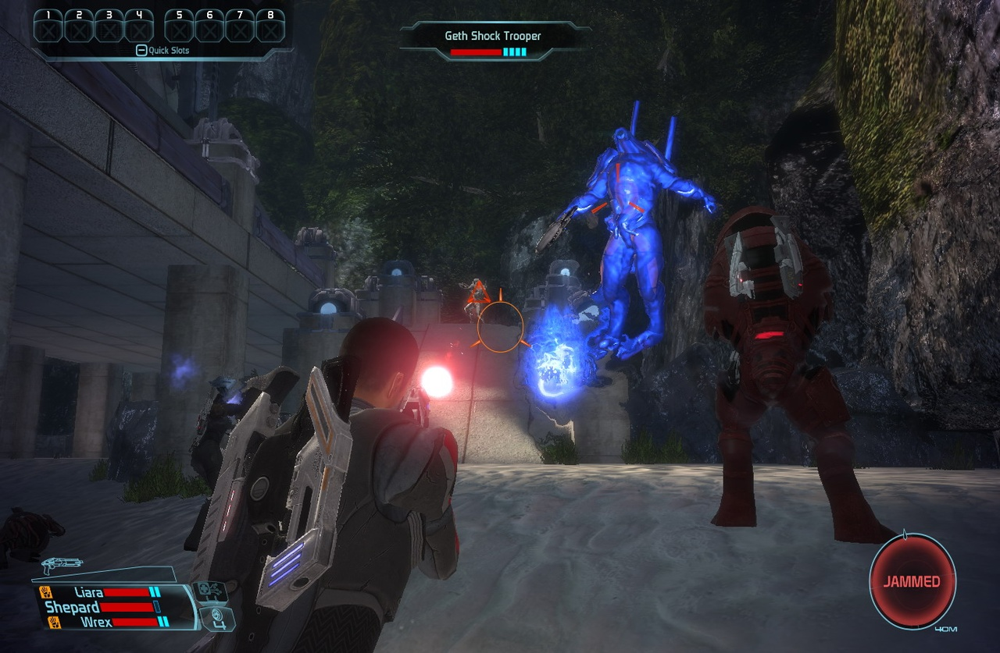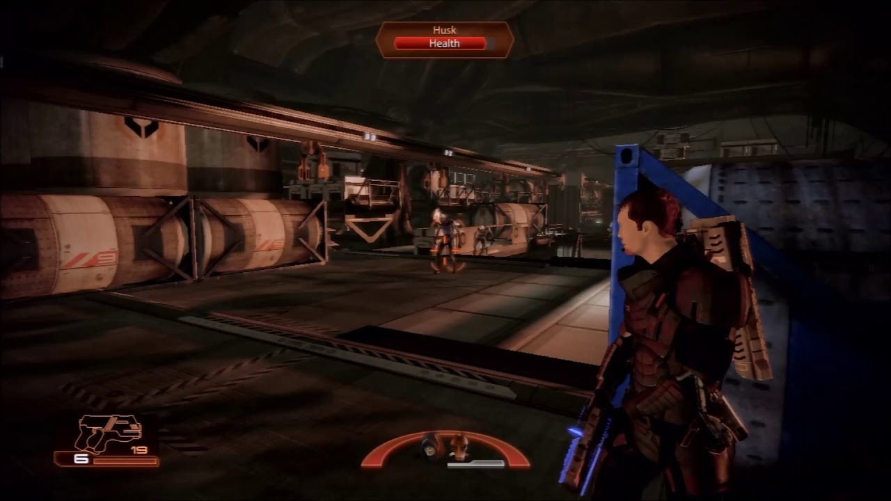Stratagy games are one of my favorite genres. 4X games are by far my favorite of the stratagy genre. 4X games, for those who are not aware, are basically civlization management games. This includes games such as Sid Mier's Civlization, or Masters of Orion. I still love RTS games. I also enjoy other management stratagy games which involve logic problems.
Masters of Orion is one of the first 4X games that I ever played. And while there are other games in the series. Masters of Orion 2 is by far the best one. I loved the games concept at it's core, building your own civilization with your own alien (or human) species. The galaxy was yours to Conquer, through diplomatic, or military means. I loved engaging fleets of ships of my own design against other species. I loved the deep, complex technology tree. I loved managing my empire, from it's colonies, to miliatry fleets. This game made me fall in love with the 4X genre.
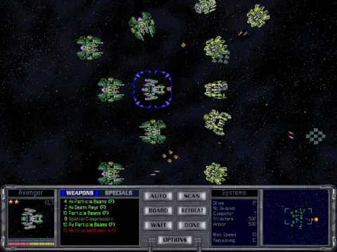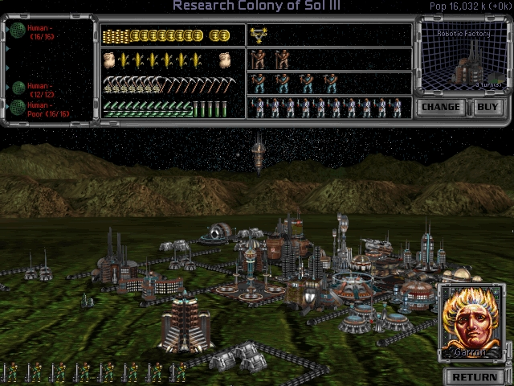Sid Mier's Civilization is the game that solidified my interest in the 4X genre. Exploring and learning about the history of the world, while takeing your own civilization to heights of greatness. While getting to interact with some of the worlds greatest leaders from countries around the world. Managing your own cities needs while trying to expand to new lands made this game a lot of fun. I sunk many hours trying to explore all the possible outcomes of each victory condition, from culture, technology, to conquest. This also helped me to learn about many of the worlds great leaders that have come about. Gaining a greater context of the world and it's history.
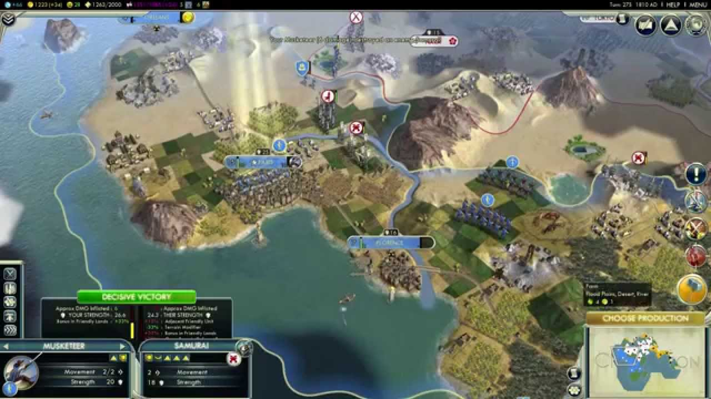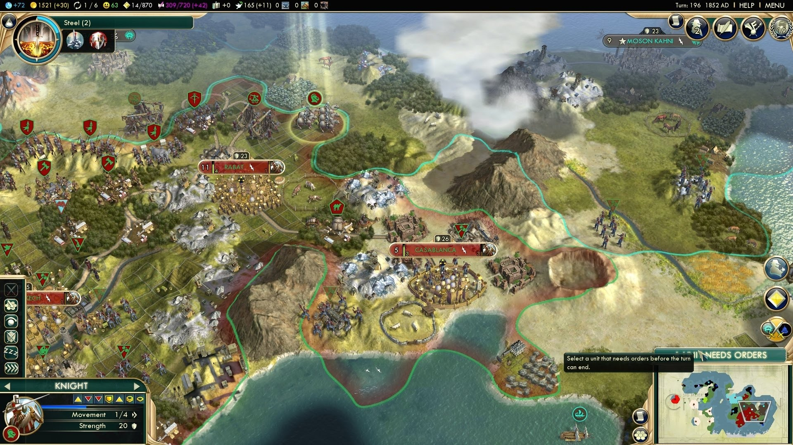Distant Worlds is by far my favorite 4X game. It offers a level of complexity that while extreamly fun, is still managable. It also manages to remain in real time, even though most 4X games are turn based. This makes management of massive empires fun, and challanging to manage everything happening at once. Especially if always played in realtime, and never pausing. Getting to watch combat take place over planets in real time is fun. I love how much actually having good logistics matters in maintaining war efforts, and unlike in most other 4X games, you can not simply steam roll everyone else. In Distant Worlds, conquest is a slow, and at times, painful process. But it rewards players who can manage their empires strategically, while managing realations with other species who are also seeking to claim the galaxy as their own.
While Distant Worlds, is by no means a simple game, it is a game that offers massive replayability with it's deep and interesting tech progression tree. As well as the interactions you find yourself making with various other empires. As well as with working to expand your own economic system. Although, the game has very customizable AI automation. Allowing you to even let the AI control everything, and you just can sit back and watch. But you can also control every aspect of your empire yourself (which is more of what I prefer, with only a few things automated). The game allows you the choice to choose how much you control over your empire, or how little. Or even to just have AI advisiment.
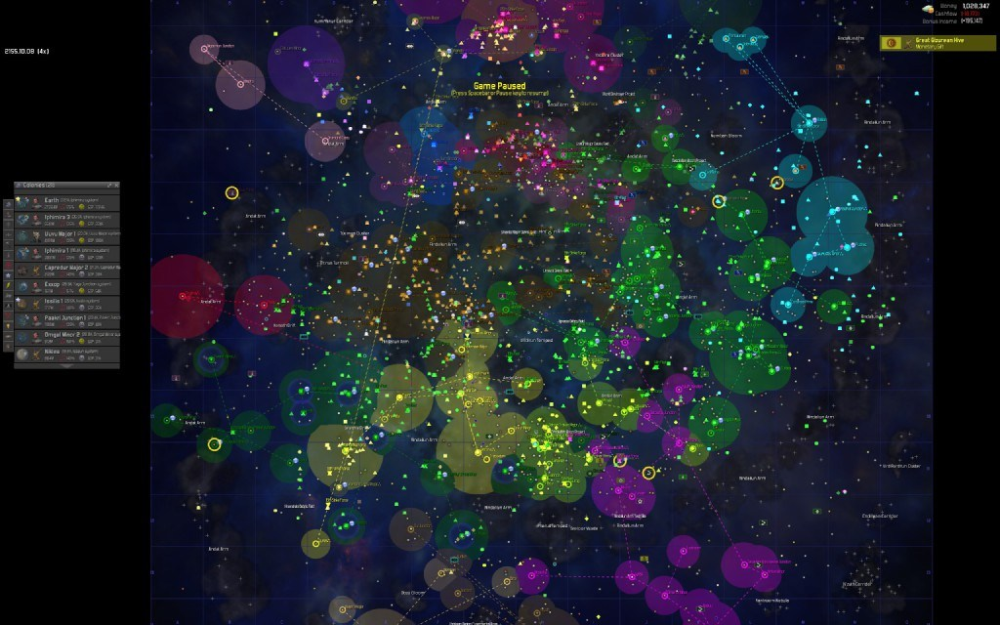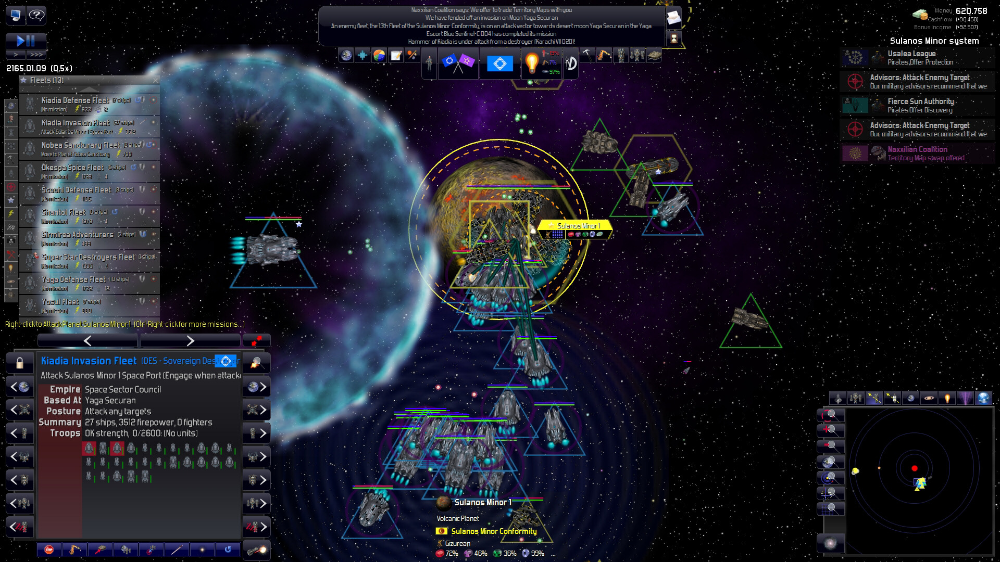Dawn of War 1 (later games are crap) was an RTS game I remeber playing a lot of. A largely faithful to the source setting, Warhammer 40K, Dawn of War was an impressive RTS, with it's many factions at play. The game offered a very wide vareity between the differnt factions, from the classic Space Marines, to the ruthless Orcs. This game played the differences of different factions very well together. Offering a vareity of stratagies and play styles for each factoin. The expansions to the original Dawn of War expanded upon the game in many ways. Adding a plantary, and interplanatry campagin for control against all other species/factions in the game.
The game also offered an impressive faction customization mode, which allowed you to make your own skins of the different factions in the game. This mode allowed for you to edit color schemes, insignia and emblems of your "chapter" of said faction. This allowed you, in multiplayer, to show of your non-lore friendly skins of the various factions. A system that is sadly not in more games.
Command and Conquer is a game franchise that is often overlooked. Though this is unfortunatly due to EA, and their very poor management of the developers, Westwood. While EA may have run the franchise as we know it into the ground, it's legacy is still not gone as one of the pioneers of the RTS genre. It is is many ways, what contributed to the creation of other major RTS games, such as Starcraft.
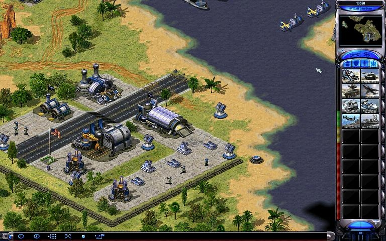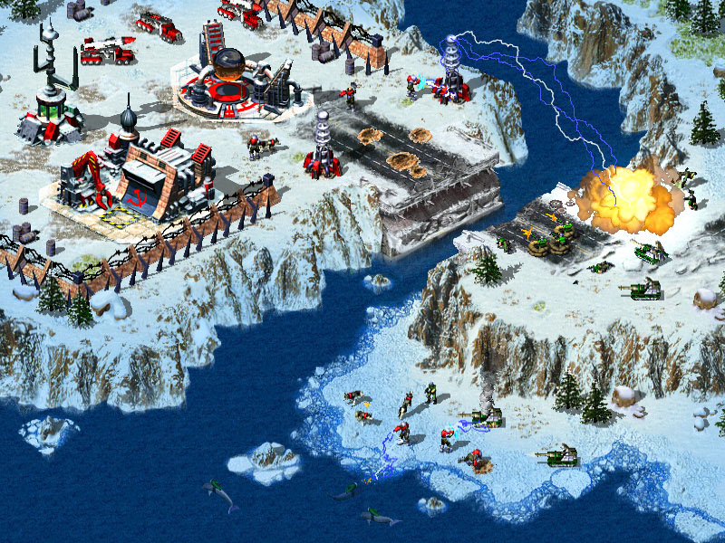While perhaps, not typically classified as a stratagy game, like RTS games. Factorio is still a very fun logistical and automation game. The game can be head stratching at times. Though, the satisfaction of developing the most effeceint and effective logistical networks that can automate their own needs is one of the games best features. This game is easy to learn, but very difficult to master, as the further you get, the more complex the logistical networks you create need to become to supply your needs. But mostly to allow you to perform research. The game has an excellent system that allows for players to gradually adjust to the game, but rewards players for thinking ahead, and building logistical systems which can be easily scalable. And as players grow more advanced, they will develop very advanced, and impressive logistical networks along with vast train networks which transport raw materials to be refined for your expanding factories.
Another major challange of factorio, is the threat of other aliens on the planet. As you expand, you will create pollution, which angers the native life. But pollution also allows alien life to evolve more powerful units, which force you as the player to expand your military to deal with the growing alien threat as you expand across the planet surface.
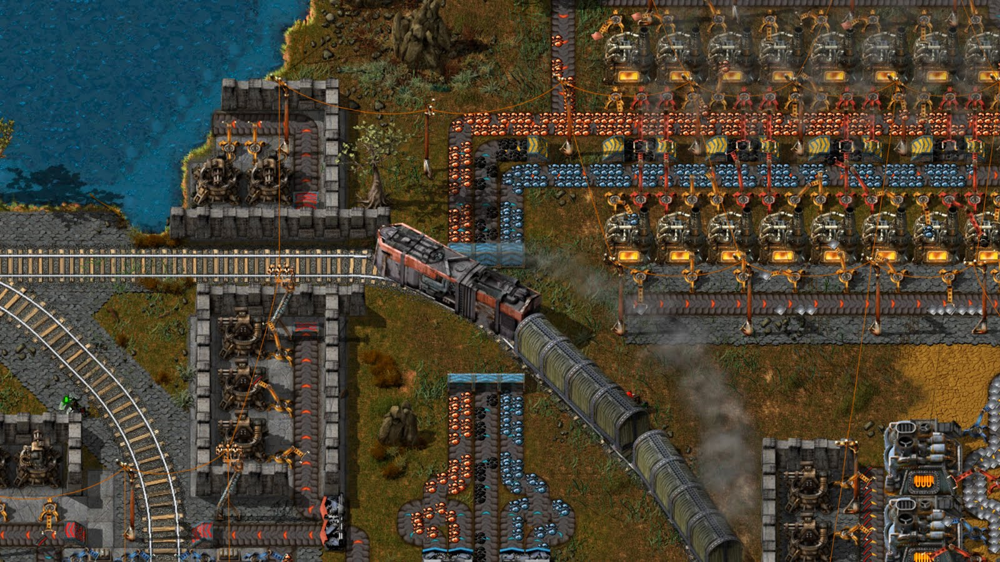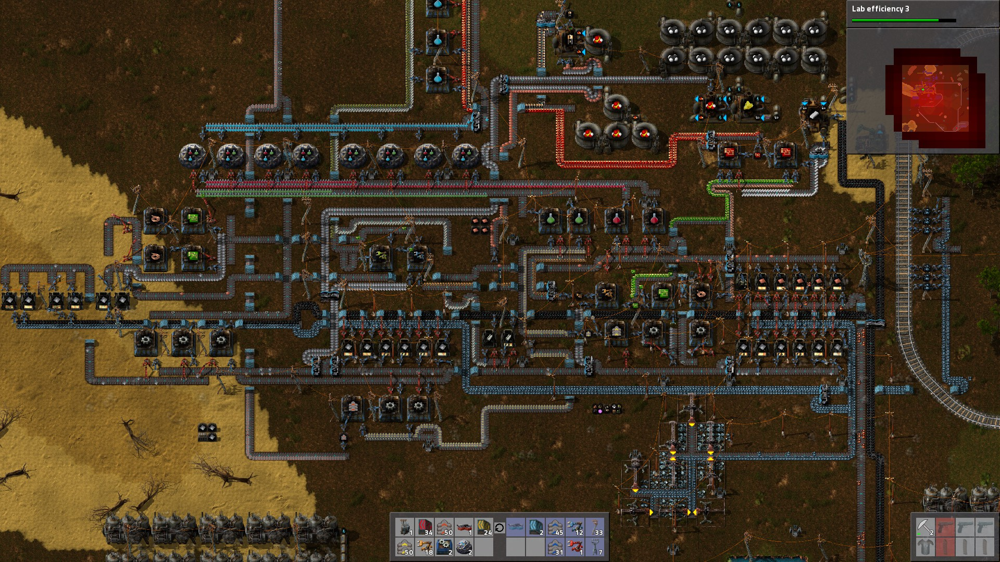